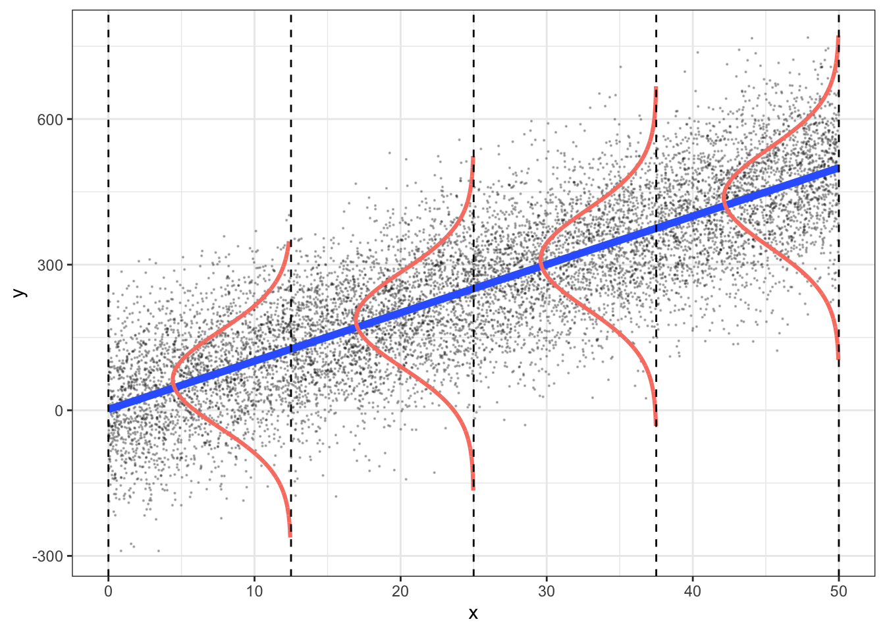
回归模型
多元线性回归
本部分的重点包括：
- 线性回归的假定
- 探索性数据分析图和汇总统计数据
- 使用残差诊断回归假设
- 解释多元线性回归的参数和相关检验和区间
- 自助法置信区间的原理
多元线性回归的假定
多元线性回归的表达式
\[\begin{aligned} y_i & = X_i \beta+\epsilon_i \\ & = \beta_1 X_{i1}+\cdots + \beta_k X_{ik} + \epsilon_i \end{aligned},\qquad for \quad i=1,\cdots , n\]
其中， \(\epsilon_i\) 相互独立，服从均值为0，标准差为 \(\sigma\) 正态分布
或者
\[y_i \sim N(X_i \beta, \sigma^2),\qquad for \quad i=1,\cdots , n\]
其中， \(X\) 是 \(n\times k\) 的预测变量矩阵，第 \(i\) 行为 (X_{i})， \(\beta\) 是长度为 \(k\) 的列向量
多元线性回归的假定
| 假定 | 表达式 | 假设不成立 | 解决方案 |
|---|---|---|---|
| 1 无完全共线性 | \(rank(X)=k,k<n\) | 无法识别回归系数 | 减少变量或增加样本 |
| 2 X外生 | \(E(X\epsilon )=0\) | 有偏，且不随N增加而改善 | 改变研究设计，因果推断技术 |
| 3 误差项零均值 | \(E(\epsilon)=0\) | 有偏，且不随N增加而改善 | 改变模型设定 |
| 4 线性关系 | \(y=\beta_{1}x_{1}+\beta_{2} x_{2}+\cdots+\epsilon\) | 模型设定错误 | 改变模型设定 |
| 5 误差项不相关（观测独立） | \(E(\epsilon_{i} \epsilon_{j})=0, i\neq j\) | 无偏但无效，标准误不正确 | 多层线性模型 |
| 6 同方差 | \(E(\epsilon^{'}\epsilon)=\sigma^{2}\boldsymbol{I}\) | 无偏但无效，标准误不正确 | 广义线性模型或稳健性标准误 |
| 7 误差项服从正态分布 | \(\epsilon\sim N(0,\sigma^{2})\) | 标准误不正确，但随N增加而改善 | 广义线性模型 |
- 如果假定1-6都成立，则最小二乘法的估计量是最优线性无偏估计量（best linear unbiased estimator, BLUE）
- 如果假定7也成立，则最小二乘法得到参数估计为最小方差无偏的，即在所有线性和非线性估计量中方差最小。
哪些研究设计可能导致违背回归假定？
- 随机选择驾驶员，改变车内音乐的音量，测试驾驶员在同一路段的反应时间
- 随机选择学生，通过学习时间预测考试能否通过
- 随机选择家庭，通过家庭收入预测家庭生育子女的数量
- 通过父亲的身高，预测他长子的身高
- 随机选择稻田，通过降雨量预测水稻产量
- 随机选择大学生，通过性别、每周锻炼时间预测体重
- 在10家有多名外科手术医生的医院选择接受某项外科手术的患者，通过患者的年龄预测手术的治疗效果，治疗效果采用1-10分记录。
如果违背正态性假定，那么需要广义线性模型；如果违背独立性假定，那么需要采用分层线性模型。
探索性分析
示例：母亲教育与子女认知能力数据集
数据结构
library("foreign")
library("dplyr")
library("kableExtra")
library(gridExtra)
kidiq <- read.dta("kidiq.dta")
kidiq <- kidiq %>% mutate(hsfactor = ifelse(mom_hs==1, "高中及以上", "高中以下"))
table1 <- kidiq %>%
filter(row_number() < 6 | row_number() > 428)
kable(table1, booktabs=T,caption="示例数据概览") %>%
kable_styling(latex_options = "scale_down")| kid_score | mom_hs | mom_iq | mom_work | mom_age | hsfactor | |
|---|---|---|---|---|---|---|
| 1 | 65 | 1 | 121.11753 | 4 | 27 | 高中及以上 | |
| 2 | 98 | 1 | 89.36188 | 4 | 25 | 高中及以上 | |
| 3 | 85 | 1 | 115.44316 | 4 | 27 | 高中及以上 | |
| 4 | 83 | 1 | 99.44964 | 3 | 25 | 高中及以上 | |
| 5 | 115 | 1 | 92.74571 | 4 | 27 | 高中及以上 | |
| 429 | 93 | 0 | 74.86073 | 2 | 25 | 高中以下 | |
| 430 | 94 | 0 | 84.87741 | 4 | 21 | 高中以下 | |
| 431 | 76 | 1 | 92.99039 | 4 | 23 | 高中及以上 | |
| 432 | 50 | 0 | 94.85971 | 2 | 24 | 高中以下 | |
| 433 | 88 | 1 | 96.85662 | 2 | 21 | 高中及以上 | |
| 434 | 70 | 1 | 91.25334 | 2 | 25 | 高中及以上 | |
有哪些变量类型？
单变量描述
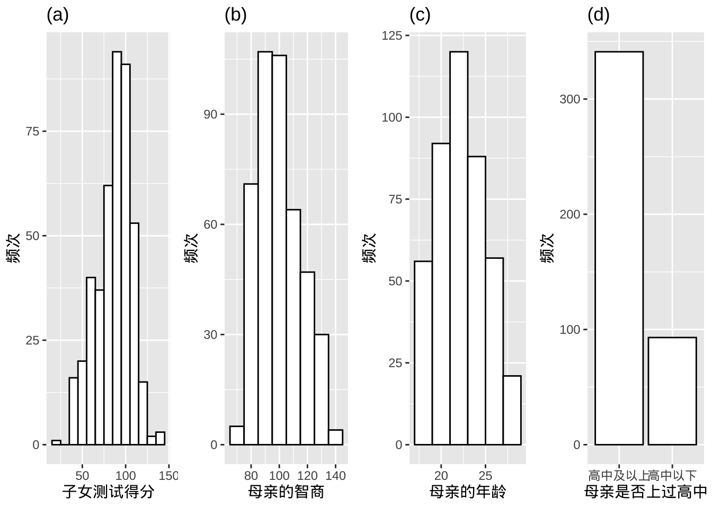
这些变量的分布有什么特征？
双变量描述
library(GGally)
gg <- ggpairs(data = kidiq,
columns = c("hsfactor", "kid_score", "mom_iq", "mom_age"))
gg[4,1] <- gg[4,1] + geom_histogram( binwidth = 5)
gg[2,1] <- gg[2,1] + geom_histogram( binwidth = 10)
gg[3,1] <- gg[3,1] + geom_histogram( binwidth = 5)
gg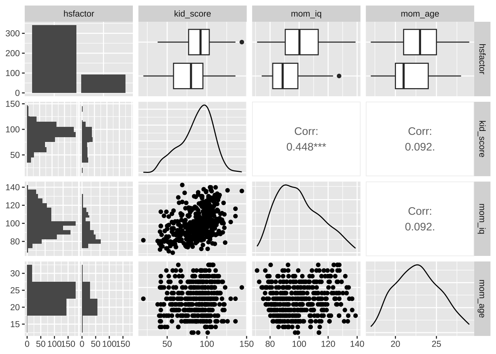
对角线上为单变量的分布，箱线图和直方图为按是否上过高中分类的其他尺度变量的分布，散点图为两个尺度变量的相关性，对角线上方为相关系数。
变量之间的关系是怎样的？
# Coded scatterplot
ggplot(kidiq, aes(x = mom_iq, y = kid_score, colour = hsfactor)) +
geom_point(aes(shape = hsfactor)) +
geom_smooth(aes(linetype = hsfactor), method = lm, se = FALSE)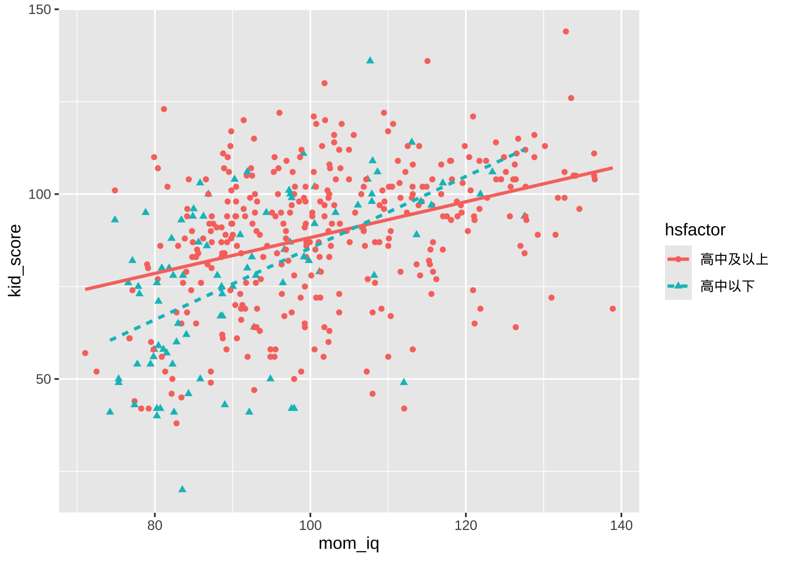
通过探索性分析，可以尝试问这样的问题：
- 子女测试分数是线性增加的吗？
- 测试分数增长的快慢受到母亲是否上过高中影响吗？
- 上过高中的母亲其子女测试分数一定更高吗？
- 这些关系在统计上是显著的吗？
- 预测子女测试分数的效果如何？
多元线性回归模型
连续型自变量的简单回归
fit1 <- lm (kid_score ~ mom_iq, data = kidiq)
summary(fit1)
Call:
lm(formula = kid_score ~ mom_iq, data = kidiq)
Residuals:
Min 1Q Median 3Q Max
-56.753 -12.074 2.217 11.710 47.691
Coefficients:
Estimate Std. Error t value Pr(>|t|)
(Intercept) 25.79978 5.91741 4.36 1.63e-05 ***
mom_iq 0.60997 0.05852 10.42 < 2e-16 ***
---
Signif. codes: 0 '***' 0.001 '**' 0.01 '*' 0.05 '.' 0.1 ' ' 1
Residual standard error: 18.27 on 432 degrees of freedom
Multiple R-squared: 0.201, Adjusted R-squared: 0.1991
F-statistic: 108.6 on 1 and 432 DF, p-value: < 2.2e-16- 系数的解释：保持其他变量不变，预测变量单位变动相应的响应变量变动大小。
但是注意：有时候在保持其他变量不变的情况下是不可能变动某个变量的，例如回归中同时包括IQ和 (IQ^{2})，或者有交互项 mom_hs*mom_i q.
回归模型诊断的常用方法，plot函数会自动绘制4张诊断图
- 线性假定：残差与拟合值没有系统关联
- 正态性：正态Q-Q图是与理论正态分布相比，标准化残差的概率图，应落在呈45度角的直线上
- 同方差性：位置尺度图水平线周围的点应该随机分布
- 离群点、高杠杆点和强影响点：残差杠杆图采用cook距离来识别对模型参数的估计产生过大影响（高杠杆值）的观测点，一般Cook距离大于 \(4/(n-k-1)\)，则表明是强影响点
- 线性假定：残差与拟合值没有系统关联
par(mfrow=c(2,2))
plot(fit1)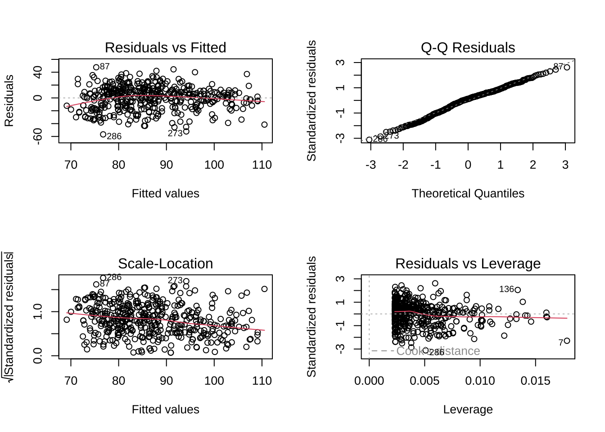
- 比较线性和2次曲线拟合
# Fitted models for Model 2 and Model 2Q
ggplot(kidiq, aes(x = mom_iq, y = kid_score)) +
geom_point() +
stat_smooth(method = "lm", formula = y ~ x,
se = FALSE, linetype = 1) +
stat_smooth(method = "lm", formula = y ~ x + I(x^2),
se = FALSE, linetype = 2)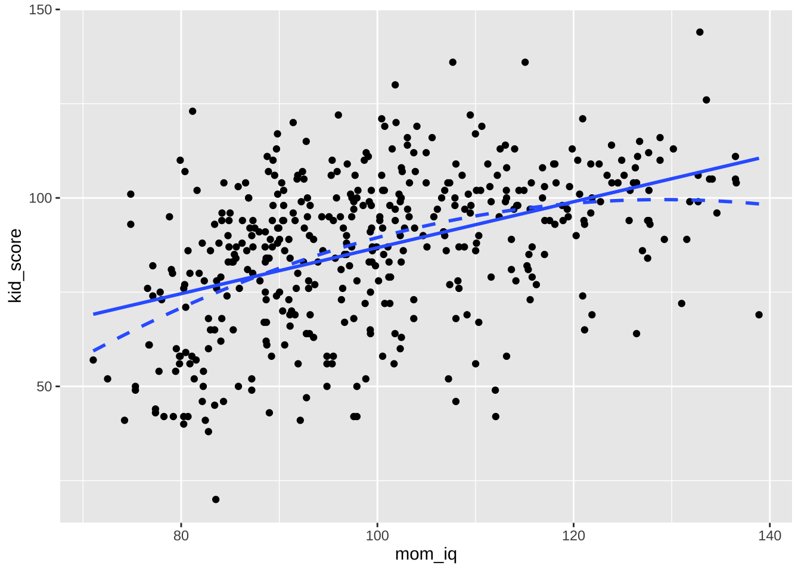
- 修正模型后的诊断
kidiq <- kidiq %>% mutate(mom_iq2 = mom_iq*mom_iq)
fit2 <- lm (kid_score ~ mom_iq + mom_iq2, data = kidiq)
summary(fit2)
Call:
lm(formula = kid_score ~ mom_iq + mom_iq2, data = kidiq)
Residuals:
Min 1Q Median 3Q Max
-54.824 -11.640 2.883 11.372 50.813
Coefficients:
Estimate Std. Error t value Pr(>|t|)
(Intercept) -99.033675 37.301385 -2.655 0.008226 **
mom_iq 3.076800 0.730291 4.213 3.07e-05 ***
mom_iq2 -0.011917 0.003517 -3.389 0.000767 ***
---
Signif. codes: 0 '***' 0.001 '**' 0.01 '*' 0.05 '.' 0.1 ' ' 1
Residual standard error: 18.05 on 431 degrees of freedom
Multiple R-squared: 0.2217, Adjusted R-squared: 0.2181
F-statistic: 61.38 on 2 and 431 DF, p-value: < 2.2e-16par(mfrow=c(2,2))
plot(fit2)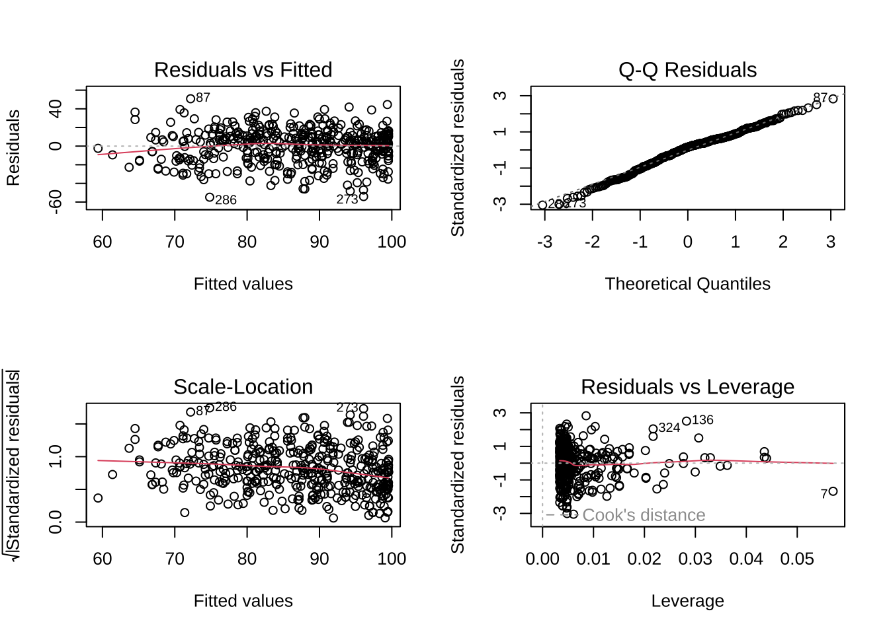
二值型自变量的简单回归
fit3 <- lm(kid_score ~ mom_hs, data = kidiq)
summary(fit3)
Call:
lm(formula = kid_score ~ mom_hs, data = kidiq)
Residuals:
Min 1Q Median 3Q Max
-57.55 -13.32 2.68 14.68 58.45
Coefficients:
Estimate Std. Error t value Pr(>|t|)
(Intercept) 77.548 2.059 37.670 < 2e-16 ***
mom_hs 11.771 2.322 5.069 5.96e-07 ***
---
Signif. codes: 0 '***' 0.001 '**' 0.01 '*' 0.05 '.' 0.1 ' ' 1
Residual standard error: 19.85 on 432 degrees of freedom
Multiple R-squared: 0.05613, Adjusted R-squared: 0.05394
F-statistic: 25.69 on 1 and 432 DF, p-value: 5.957e-07此种情况下，回归系统和截距很容易解释。这个回归和两个独立样本t检验一致吗？需要满足等方差的假设吗？
两个自变量的多元回归
fit4 <- lm(kid_score ~ mom_hs+ mom_iq, data = kidiq)
summary(fit4)
Call:
lm(formula = kid_score ~ mom_hs + mom_iq, data = kidiq)
Residuals:
Min 1Q Median 3Q Max
-52.873 -12.663 2.404 11.356 49.545
Coefficients:
Estimate Std. Error t value Pr(>|t|)
(Intercept) 25.73154 5.87521 4.380 1.49e-05 ***
mom_hs 5.95012 2.21181 2.690 0.00742 **
mom_iq 0.56391 0.06057 9.309 < 2e-16 ***
---
Signif. codes: 0 '***' 0.001 '**' 0.01 '*' 0.05 '.' 0.1 ' ' 1
Residual standard error: 18.14 on 431 degrees of freedom
Multiple R-squared: 0.2141, Adjusted R-squared: 0.2105
F-statistic: 58.72 on 2 and 431 DF, p-value: < 2.2e-16- 相对于模型3，估计在考虑母亲智商影响的情况下，是否上过高中对子女测试分数的影响差异。平均而言，上过高中的母亲其子女测试分数高5.95分。上面模型的11.77分是高估了高中对分数的影响。
- 类似的，在考虑母亲高中的影响的情况下，母亲智商对子女测试分数的影响平均而言是0.56，也小于第1个模型的系数0.61。
- 模型的拟合优度R方为0.21，远高于只用高中变量的模型拟合优度0.05。
基于正态性理论的多元回归推断
除了了解效应的显著性，还需要采用置信区间量化效应量的不确定性和量化模型预测值的不确定性。
confint(fit4) 2.5 % 97.5 %
(Intercept) 14.1839148 37.2791615
mom_hs 1.6028370 10.2973969
mom_iq 0.4448487 0.6829634new.data <- data.frame(mom_iq=190, mom_hs = 0)
predict(fit4, new = new.data, interval = "prediction") fit lwr upr
1 132.8737 95.18156 170.5658- 95%的信心，母亲是否上过高中造成子女测试分数的差异在1.6分到10.3分之间。
- 基于模型4，有95%的信心，如果母亲智商190，但是没有上过高中，则子女的测试分数在95到171之间。
基于自助法的多元回归推断
如果回归模型违背了假设，自助法是一种更稳健的统计推断方法。其原理是原始数据样本能够代表总体，所以可以通过从原始样本数据中再抽样，获得多个子样本，从子样本的统计特征了解估计参数的不确定性。
自助法的步骤如下：
- 在原始数据中进行重抽样
- 用新的子样本重新拟合原来的回归模型得到新的回归系数、截距
- 重复上面的两个步骤足够多的次数（比如1000次）
- 采用1000次重抽样回归模型的估计量绘制参数自助法分布
- 通过2.5%和97.5%的百分位数获得每个参数自助法分布的置信区间
library(rsample)
library(tidyverse)
set.seed(666)
bootreg <- kidiq %>%
bootstraps(1000) %>%
pull(splits) %>%
map(\(df) lm(kid_score ~ mom_iq + mom_hs, data = df) ) %>%
map(\(mod) as.data.frame(t(as.matrix(coef(mod))))) %>%
list_rbind() %>% pivot_longer(everything(), names_to = "variable", values_to = "value")
bootregresult <- bootreg %>%
group_by(variable) %>%
summarise(across( where(is.numeric),
list(low = ~quantile(., probs = 0.025, na.rm = TRUE),
high = ~quantile(., probs = 0.975, na.rm = TRUE))))
bootregresult# A tibble: 3 × 3
variable value_low value_high
<chr> <dbl> <dbl>
1 (Intercept) 14.1 37.5
2 mom_hs 1.51 10.5
3 mom_iq 0.439 0.681ggplot(bootreg, aes(x = value)) +
geom_histogram(fill = "steelblue", color = "black", bins = 30) +
facet_wrap(~variable, scales = "free") 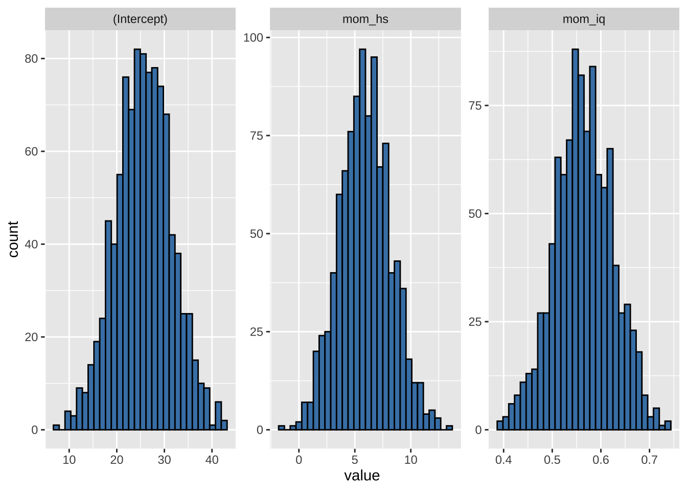
结果与正态分布理论假定下的结果相似。此外，还有多种其他计算自助法置信区间的方法，但是百分位法是应用最广泛的。
具有交互项的多元回归
- 没有截距的模型（常数项）
fit5 <- lm (kid_score ~ mom_hs + mom_iq - 1, data = kidiq)
summary(fit5)
Call:
lm(formula = kid_score ~ mom_hs + mom_iq - 1, data = kidiq)
Residuals:
Min 1Q Median 3Q Max
-55.348 -10.796 2.187 12.789 50.838
Coefficients:
Estimate Std. Error t value Pr(>|t|)
mom_hs 5.99194 2.25786 2.654 0.00825 **
mom_iq 0.81524 0.01979 41.189 < 2e-16 ***
---
Signif. codes: 0 '***' 0.001 '**' 0.01 '*' 0.05 '.' 0.1 ' ' 1
Residual standard error: 18.51 on 432 degrees of freedom
Multiple R-squared: 0.9571, Adjusted R-squared: 0.9569
F-statistic: 4817 on 2 and 432 DF, p-value: < 2.2e-16- 添加交互项 增加一个交互项以允许IQ的回归系数随高中完成情况不同而变动
fit6 <- lm (kid_score ~ mom_hs + mom_iq + mom_hs:mom_iq, data = kidiq)
summary(fit6)
Call:
lm(formula = kid_score ~ mom_hs + mom_iq + mom_hs:mom_iq, data = kidiq)
Residuals:
Min 1Q Median 3Q Max
-52.092 -11.332 2.066 11.663 43.880
Coefficients:
Estimate Std. Error t value Pr(>|t|)
(Intercept) -11.4820 13.7580 -0.835 0.404422
mom_hs 51.2682 15.3376 3.343 0.000902 ***
mom_iq 0.9689 0.1483 6.531 1.84e-10 ***
mom_hs:mom_iq -0.4843 0.1622 -2.985 0.002994 **
---
Signif. codes: 0 '***' 0.001 '**' 0.01 '*' 0.05 '.' 0.1 ' ' 1
Residual standard error: 17.97 on 430 degrees of freedom
Multiple R-squared: 0.2301, Adjusted R-squared: 0.2247
F-statistic: 42.84 on 3 and 430 DF, p-value: < 2.2e-16- 解释系数和截距
- 截距： \(IQ=0 \quad hs=0\)（无意义）
- mom_hs的系数： IQ=0时，是否完成高中相应的孩子得分差异
- mom_iq的系数： 未完成高中母亲中，IQ增加所相应的孩子得分差异，红线斜率
- 交互项的系数：母亲是否完成高中两组之间在IQ斜率上的差别
- 截距： \(IQ=0 \quad hs=0\)（无意义）
回到图4，交互项体现了图中的什么关系？
- 快速添加交互项
fit6 <- lm (kid_score ~ mom_hs * mom_iq, data = kidiq)
summary(fit6)
Call:
lm(formula = kid_score ~ mom_hs * mom_iq, data = kidiq)
Residuals:
Min 1Q Median 3Q Max
-52.092 -11.332 2.066 11.663 43.880
Coefficients:
Estimate Std. Error t value Pr(>|t|)
(Intercept) -11.4820 13.7580 -0.835 0.404422
mom_hs 51.2682 15.3376 3.343 0.000902 ***
mom_iq 0.9689 0.1483 6.531 1.84e-10 ***
mom_hs:mom_iq -0.4843 0.1622 -2.985 0.002994 **
---
Signif. codes: 0 '***' 0.001 '**' 0.01 '*' 0.05 '.' 0.1 ' ' 1
Residual standard error: 17.97 on 430 degrees of freedom
Multiple R-squared: 0.2301, Adjusted R-squared: 0.2247
F-statistic: 42.84 on 3 and 430 DF, p-value: < 2.2e-16建立最终模型
最终多元线性回归模型的典型特征包括：
- 解释变量能够针对主要的研究问题
- 解释变量控制了重要的协变量
- 调查了潜在交互作用
- 中心化变量方便解释
- 剔除了不必要的变量
- 使用残差图检验了回归假定和影响点
- 模型以简洁地方式讲述了一个有说服力的故事
虽然在报告研究结果时，一般要求选择一个合理的最终模型，但是值得注意：
1 研究者在得出结论时通常会检查并考虑一系列相关的模型
2 不同的研究者有时会针对同一组数据选择不同的模型作为“最终模型”。“最终模型”的选择取决于许多因素，例如主要研究问题、建模目的、简约性和拟合模型质量之间的权衡、基本假设等。建模决策不应自动化或完全基于统计检验；学科领域知识应始终在建模过程中发挥作用。要能够捍卫所选择的任何最终模型，但不应该感到有压力要找到唯一的“正确模型”，尽管大多数好的模型都会得出类似的结论。
在比较不同的模型构建时，可以使用的检验方法：
- R方能够测量模型解释的响应变量的变异程度。但是会随着增加自变量而增大，即使自变量增加的信息很少。
- 调整后R方，可以增加模型复杂度的惩罚。
- AIC（Akaike Information Criterion, 赤池信息准则）来自信息论， \(AIC = -2 ( ln ( likelihood )) + 2 K\) ，其中likelihood为给定模型的条件下数据的概率，k为参数个数。同样是为了平衡模型性能和模型复杂度，无论模型大小，AIC值越小越好。BIC（贝叶斯信息准则）与 AIC 类似，但对附加模型项的惩罚更大。
- 平方和 F 检验。是对单个模型系数 t 检验的推广，可用于对嵌套模型进行显著性检验，即其中一个模型是另一个模型的简化版本。
一个可能的最终模型如下：
fit7 <- lm (kid_score ~ mom_hs + mom_iq + mom_iq2, data = kidiq)
summary(fit7)
Call:
lm(formula = kid_score ~ mom_hs + mom_iq + mom_iq2, data = kidiq)
Residuals:
Min 1Q Median 3Q Max
-54.553 -10.940 2.502 11.095 48.710
Coefficients:
Estimate Std. Error t value Pr(>|t|)
(Intercept) -88.541848 37.390233 -2.368 0.018324 *
mom_hs 5.107323 2.207015 2.314 0.021131 *
mom_iq 2.828771 0.734492 3.851 0.000135 ***
mom_iq2 -0.010910 0.003526 -3.094 0.002104 **
---
Signif. codes: 0 '***' 0.001 '**' 0.01 '*' 0.05 '.' 0.1 ' ' 1
Residual standard error: 17.96 on 430 degrees of freedom
Multiple R-squared: 0.2313, Adjusted R-squared: 0.2259
F-statistic: 43.12 on 3 and 430 DF, p-value: < 2.2e-16- 模型的比较
anova(fit7, fit4)Analysis of Variance Table
Model 1: kid_score ~ mom_hs + mom_iq + mom_iq2
Model 2: kid_score ~ mom_hs + mom_iq
Res.Df RSS Df Sum of Sq F Pr(>F)
1 430 138670
2 431 141757 -1 -3087 9.5723 0.002104 **
---
Signif. codes: 0 '***' 0.001 '**' 0.01 '*' 0.05 '.' 0.1 ' ' 1线性回归模型设定示例
预期寿命的影响因素
- 数据来源：罗伯特·J.巴罗，夏威尔·萨拉-伊-马丁《经济增长》所引用的Barro-Lee数据集（我们只使用整理后85年数据)
- 135个国家的人均GDP（gdpcap）、25岁以上平均受教育年限（school）、公民自由度（civlib，由低到高1-7分）、近期战争时间比例（wartime）。
- 先来一个简单的回归，只有教育系数显著，是否符合你的预期？会不会模型设定错误？
life <- read.csv(file = "./life.csv")
life <- na.omit(life)
fit <- lm(formula = lifeexp ~ gdpcap + school + civlib + wartime,data = life)
summary(fit)
Call:
lm(formula = lifeexp ~ gdpcap + school + civlib + wartime, data = life)
Residuals:
Min 1Q Median 3Q Max
-13.2871 -3.0705 -0.0368 4.6629 12.1285
Coefficients:
Estimate Std. Error t value Pr(>|t|)
(Intercept) 52.9671697 3.0379356 17.435 < 2e-16 ***
gdpcap 0.0003216 0.0002551 1.260 0.211
school 2.3866392 0.4102266 5.818 9.01e-08 ***
civlib -0.7522863 0.4861266 -1.548 0.125
wartime 1.0936902 5.5354286 0.198 0.844
---
Signif. codes: 0 '***' 0.001 '**' 0.01 '*' 0.05 '.' 0.1 ' ' 1
Residual standard error: 5.43 on 90 degrees of freedom
Multiple R-squared: 0.7509, Adjusted R-squared: 0.7399
F-statistic: 67.84 on 4 and 90 DF, p-value: < 2.2e-16- 我们所看到的效应关系是真实的吗？三个途径去验证
- 标准误和相关检验：t检验和F检验（见回归输出结果）
- 残差的模式
- 标准误和相关检验：t检验和F检验（见回归输出结果）
残差的理想模式：
x <- runif(1000,1,100)
error <- rnorm(1000)
y <- 10+ 3*x +error
fit0 <- lm(y~x)
plot(x=x,y=fit0$residuals)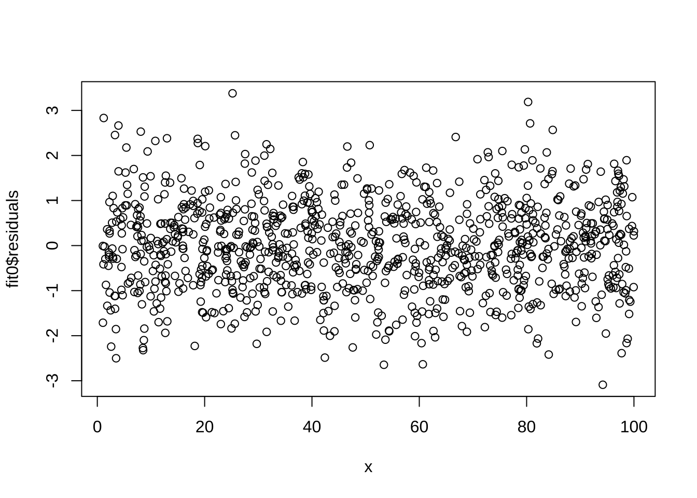
存在异方差时的模式：
x <- runif(1000,1,100)
error <- rnorm(1000,mean=0,sd=1*x)
y <- 10+ 3*x +error
fit0 <- lm(y~x)
plot(x=x,y=fit0$residuals)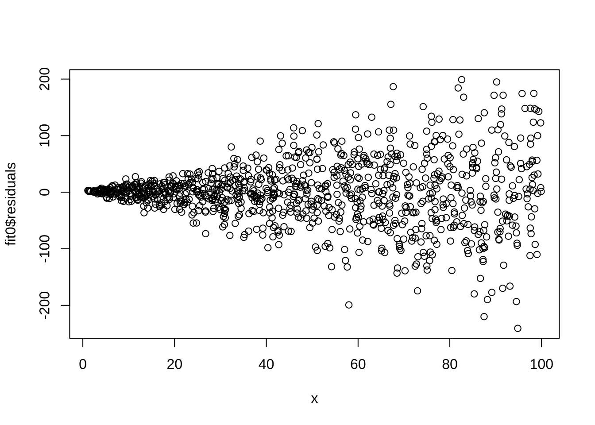
- 存在离群值
- 加权最小二乘法
- 存在异方差，则具有较高误差方差的观测含有较少的信息，而具有较低误差方差的观测含有较多的信息。
- 如果我们能在估计中给予低误差方差观察较高权重，那么能得到更有效的估计。那么相应的最小化误差平方和也变为最小化 加权误差平方和 。
[{n}{i=1} w_i {i}{2}=]
- 回归系数加权最小二乘估计：
[_{WLS}=()^{-1}]
- 上式其中W为对角线为权重的对角阵，每个权重应该与每个y观测的标准差成反比，即
[_iN(0,^2_i )^2_i = 1/w^2_i ]
- 如果我们通过样本性质能够确定权重，lm()函数中可以通过weights参数设定权重。
- 如果不知道权重，可以利用残差估计权重（残差平方对自变量回归的拟合值的倒数），即可行广义最小二乘法。
- 通过该方法获取的标准误，即为怀特标准误、稳健标准误、三明治标准误、异方差一致标准误等。
- 存在异方差，则具有较高误差方差的观测含有较少的信息，而具有较低误差方差的观测含有较多的信息。
library(lmtest); library(car)载入需要的程序包：zoo
载入程序包：'zoo'The following objects are masked from 'package:base':
as.Date, as.Date.numeric载入需要的程序包：carData
载入程序包：'car'The following object is masked from 'package:purrr':
someThe following object is masked from 'package:dplyr':
recodevc <- hccm(fit, type = "hc1")
se.corrected <- sqrt(diag(vc))
coeftest(fit, vcov=vc)
t test of coefficients:
Estimate Std. Error t value Pr(>|t|)
(Intercept) 52.96716974 3.29289359 16.0853 < 2.2e-16 ***
gdpcap 0.00032156 0.00026753 1.2020 0.2325
school 2.38663924 0.42745500 5.5834 2.473e-07 ***
civlib -0.75228629 0.50324260 -1.4949 0.1384
wartime 1.09369023 5.30329592 0.2062 0.8371
---
Signif. codes: 0 '***' 0.001 '**' 0.01 '*' 0.05 '.' 0.1 ' ' 1- 示例的残差图
plot(fit$fitted.values,fit$residuals, main="life expectancy against fitted Y")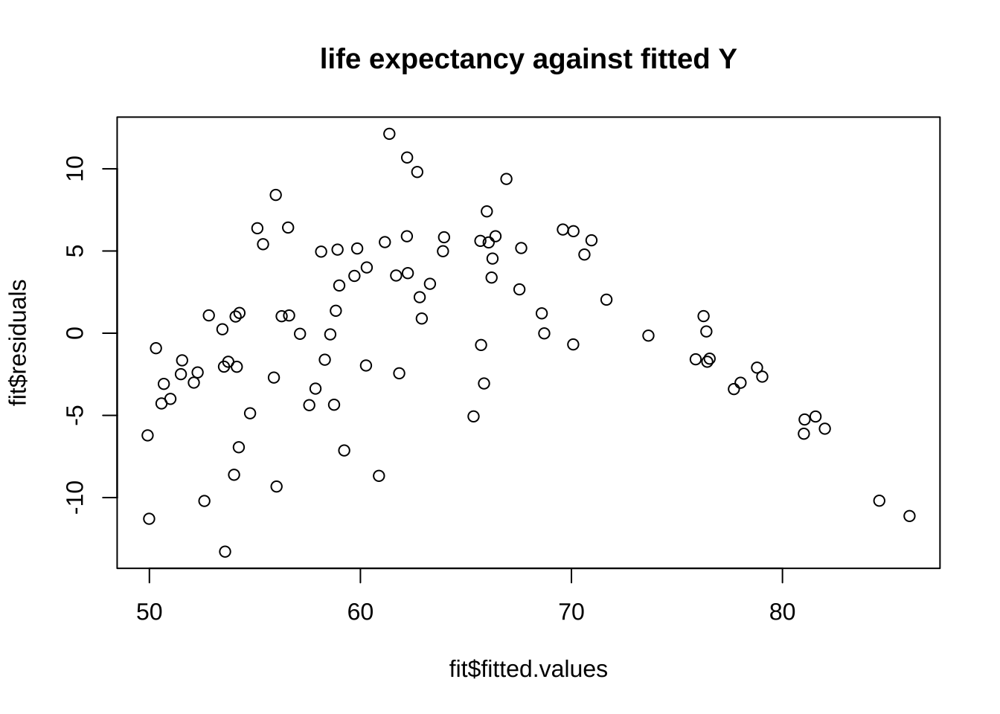
有异方差问题吗？还有什么问题？
残差与拟合值相关，意味着什么？
分别检查残差与各个协变量的关系
- 残差与公民自由度的关系
plot(life$civlib,fit$residuals)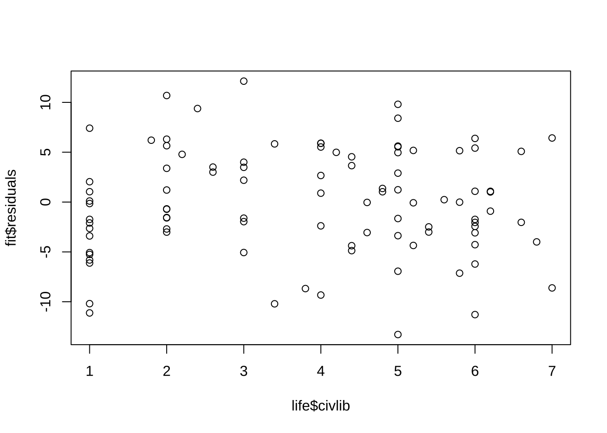
- 残差与战时比例的关系
plot(life$wartime,fit$residuals)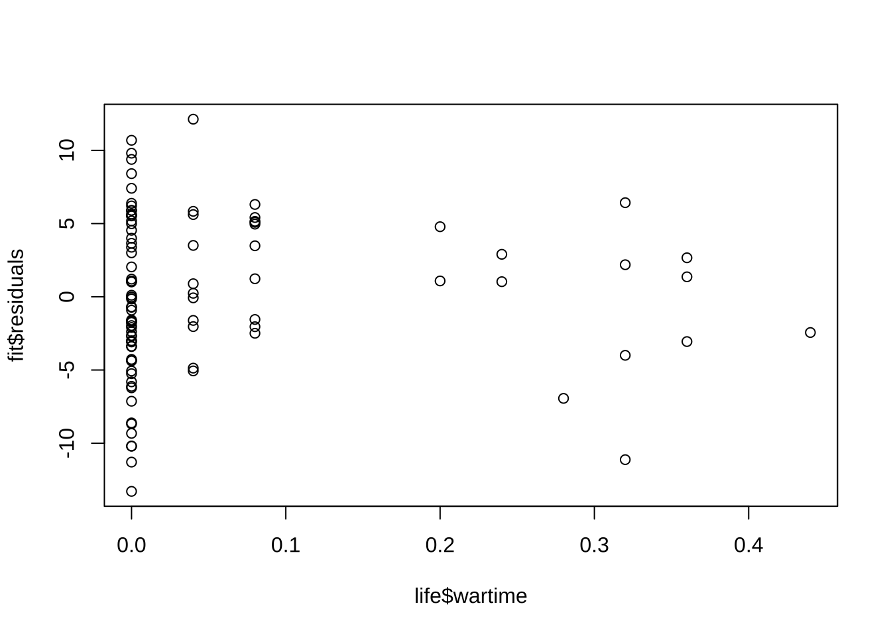
- 残差与教育的关系
plot(life$school,fit$residuals)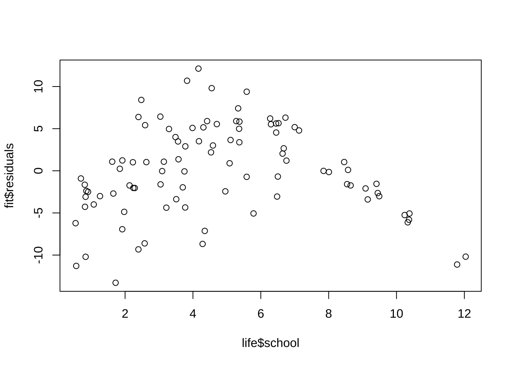
- 残差与GDP的关系
plot(life$gdpcap,fit$residuals)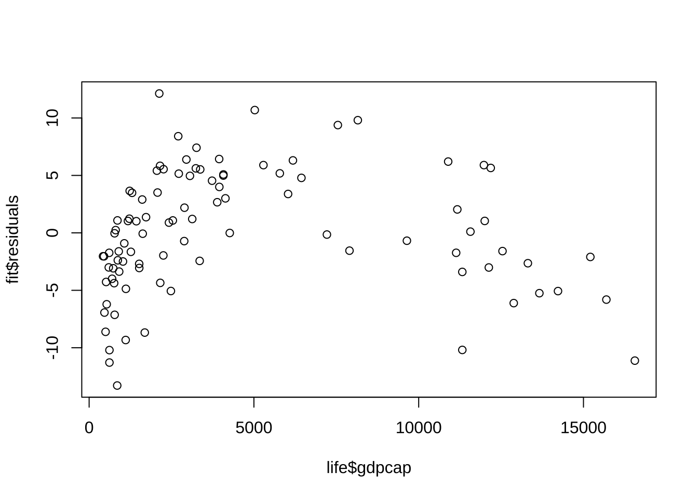
- 示例修正模型设定
- 公民自由度、战时比例与残差似乎没有明显模式，而教育和GDP和残差有明显的非线性相关关系。
- 残差中的模式意味着模型设定错误。
- 如果看到有曲线相关关系，可以考虑添加二次项或进行对话变换。
- 重新设定模型，将教育和GDP变换为对数项。
- 公民自由度、战时比例与残差似乎没有明显模式，而教育和GDP和残差有明显的非线性相关关系。
fit <- lm(formula = lifeexp ~ I(log(gdpcap)) + I(log(school)) + civlib + wartime, data=life)
summary(fit)
Call:
lm(formula = lifeexp ~ I(log(gdpcap)) + I(log(school)) + civlib +
wartime, data = life)
Residuals:
Min 1Q Median 3Q Max
-11.5038 -1.9584 0.2405 2.0338 11.0816
Coefficients:
Estimate Std. Error t value Pr(>|t|)
(Intercept) 13.1893 5.4439 2.423 0.0174 *
I(log(gdpcap)) 5.3730 0.6867 7.825 9.35e-12 ***
I(log(school)) 6.0431 0.9040 6.685 1.88e-09 ***
civlib -0.1843 0.3084 -0.598 0.5517
wartime -0.2174 3.6894 -0.059 0.9531
---
Signif. codes: 0 '***' 0.001 '**' 0.01 '*' 0.05 '.' 0.1 ' ' 1
Residual standard error: 3.627 on 90 degrees of freedom
Multiple R-squared: 0.8889, Adjusted R-squared: 0.8839
F-statistic: 180 on 4 and 90 DF, p-value: < 2.2e-16- 再观察残差图
plot(fit$fitted.values,fit$residuals, main="life expectancy against fitted Y")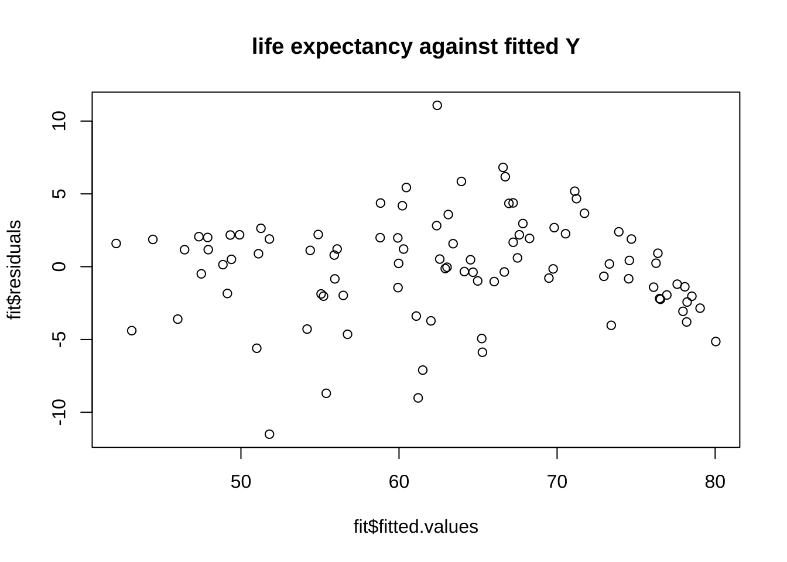
- 残差与公民自由度的关系
plot(life$civlib,fit$residuals)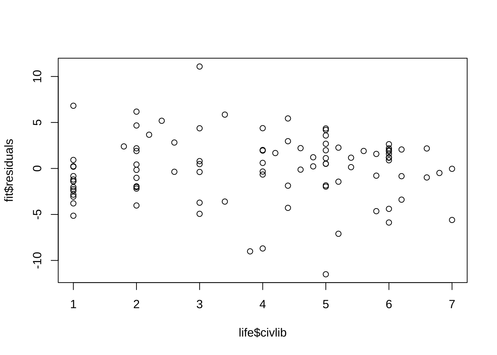
- 残差与战时比例的关系
plot(life$wartime,fit$residuals)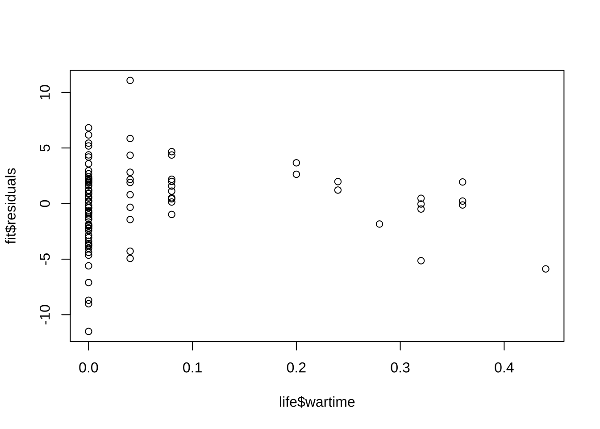
- 残差与教育的关系
plot(life$school,fit$residuals)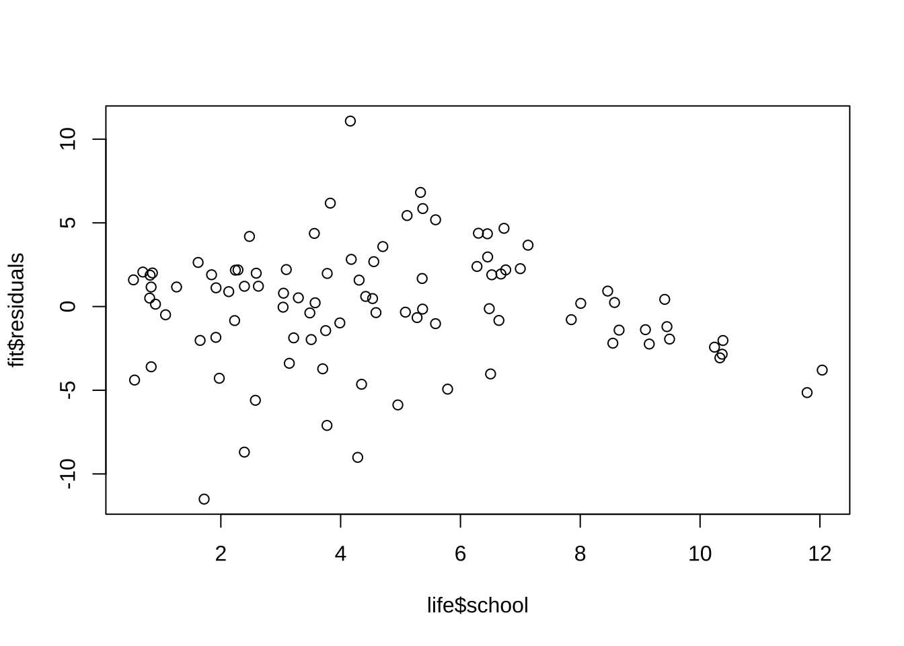
- 残差与GDP的关系
plot(life$gdpcap,fit$residuals)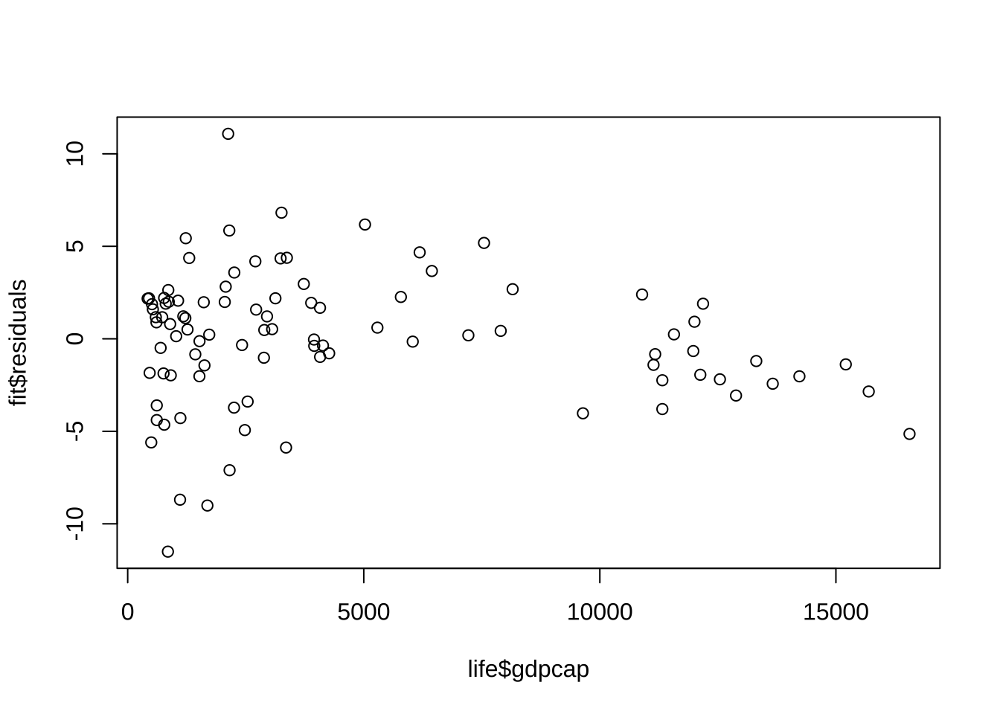
观察残差图，可以看出相关模式已经消失了，但是还有异方差的可能（喇叭形）
比较稳健性标准误
library(orgutils)
fitsum <- summary(fit)
vc <- hccm(fit, type = "hc1")
fitout <- data.frame(est=fitsum$coefficients[,1], se=fitsum$coefficients[,2], robust_se=sqrt(diag(vc)))
toOrg(round(fitout,digits=2))| row.names | est | se | robust_se |
|----------------+-------+------+-----------|
| (Intercept) | 13.19 | 5.44 | 5.23 |
| I(log(gdpcap)) | 5.37 | 0.69 | 0.65 |
| I(log(school)) | 6.04 | 0.9 | 0.81 |
| civlib | -0.18 | 0.31 | 0.28 |
| wartime | -0.22 | 3.69 | 3.43 |- 模型的拟合优度
- 模型解释力的评价
- R方
- 回归标准误
- 样本外检验
- 交叉验证
- R方
- 回归标准误
- (^2)反映拟合值与真实值之间的平均差距，并且它与y的单位尺度是相同的，非常容易解释。
- (^2)越小，说明预测效果越好，(y)越接近真实值。
- (^2)反映拟合值与真实值之间的平均差距，并且它与y的单位尺度是相同的，非常容易解释。
| 协变量 | (R^2) | () |
|---|---|---|
| GDP, School, Civlib, Wartime | 0.75 | 5.43 |
| log(GDP), log(School), Civlib, Wartime | 0.88 | 3.63 |
相同的数据，相同的响应变量
每个值是什么含义？哪个模型好一些？
样本外拟合优度
- 假设我们用CGSS2010的数据建立了某个模型，那么我们可能想知道这个模型来预测CGSS2015的数据效果如何？
- 如果我们用模型拟合样本外数据和训练样本同样好，那么我们更有信心相信我们找到了真实的模型。
- 样本外检验步骤：
- 采用训练样本拟合模型，获取回归系数 (_{training})
- 用测试样本的数据计算拟合值 (y_{test})
- 比较训练样本的拟合度（例如，({training})）与测试样本的拟合度 (std dev(y{test} - _{test}) ) ，如果两者相等则说明模型预测能力高。
- 采用训练样本拟合模型，获取回归系数 (_{training})
- 假设我们用CGSS2010的数据建立了某个模型，那么我们可能想知道这个模型来预测CGSS2015的数据效果如何？
交叉验证
- 如果我们样本量有限，并且很难找到其他的合格样本，可以采取交叉验证。
- 交叉验证的步骤：
- 将数据分成k等分，留下一份作为测试集，k-1份作为训练集。特别是Leave-one-out cross validataion (LOOCV) 留一法是比较常用的技术，即将样本量为n的样本分成n等分，只留1个观测作为测试集。
- 采用训练集来进行回归，获取回归系数。
- 利用测试集和回归系数来后去测试集预测值
- 比较测试集预测值与真实值，计算平均预测误差，即由预测值与真实值获取的标准差。
- 重复1-4步 k 次，计算平均预测误差平方的均值，再取平方根，即得到了 k重交叉验证的预测误差。
- 将数据分成k等分，留下一份作为测试集，k-1份作为训练集。特别是Leave-one-out cross validataion (LOOCV) 留一法是比较常用的技术，即将样本量为n的样本分成n等分，只留1个观测作为测试集。
- 如果我们样本量有限，并且很难找到其他的合格样本，可以采取交叉验证。
library(boot)
载入程序包：'boot'The following object is masked from 'package:car':
logit# 注意要采用广义线性回归函数
fitglm <- glm(lifeexp~gdpcap+school+civlib+wartime, data=life)
# 5重交叉验证
cv.err <- cv.glm(life,fitglm,K=5)
# 报告交叉验证的预测误差：第1个是原始值，第2个是调整值（与留一法比较）
cv.err$delta[1] 31.6745 31.2306| 协变量 | (R^2) | () | 5重交叉验证误差 |
|---|---|---|---|
| GDP, School, Civlib, Wartime | 0.75 | 5.43 | 32.3 |
| log(GDP), log(School), Civlib, Wartime | 0.88 | 3.63 | 13.8 |
CV预测误差一般比回归标准误要高，为什么？
模型设定正确与否远比正确预测更重要，为什么？失去32年的预期寿命 vs. 失去14年预期寿命哪个更严重？
进一步改进模型
fit <- lm(formula = lifeexp ~ I(log(gdpcap)) + I(log(school)) + I(log(civlib)) + wartime + I(wartime^2), data=life)
summary(fit)
Call:
lm(formula = lifeexp ~ I(log(gdpcap)) + I(log(school)) + I(log(civlib)) +
wartime + I(wartime^2), data = life)
Residuals:
Min 1Q Median 3Q Max
-10.7938 -1.7693 0.0006 2.0123 10.5086
Coefficients:
Estimate Std. Error t value Pr(>|t|)
(Intercept) 8.0854 5.4620 1.480 0.14233
I(log(gdpcap)) 5.8587 0.6872 8.525 3.60e-13 ***
I(log(school)) 6.0283 0.8606 7.005 4.53e-10 ***
I(log(civlib)) 0.1266 0.8955 0.141 0.88790
wartime 36.3329 12.8663 2.824 0.00585 **
I(wartime^2) -110.8191 36.8656 -3.006 0.00344 **
---
Signif. codes: 0 '***' 0.001 '**' 0.01 '*' 0.05 '.' 0.1 ' ' 1
Residual standard error: 3.482 on 89 degrees of freedom
Multiple R-squared: 0.8987, Adjusted R-squared: 0.8931
F-statistic: 158 on 5 and 89 DF, p-value: < 2.2e-16fitglm <- glm(lifeexp~ I(log(gdpcap)) + I(log(school)) + I(log(civlib)) + wartime + I(wartime^2), data=life)
cv.err <- cv.glm(life,fitglm,K=5)
cv.err$delta[1] 12.95672 12.77216| 协变量 | (R^2) | () | 5重交叉验证误差 |
|---|---|---|---|
| GDP, School, Civlib, Wartime | 0.75 | 5.43 | 32.3 |
| log(GDP), log(School), Civlib, Wartime | 0.88 | 3.63 | 13.8 |
| log(GDP), log(School),log(Civlib), Wartime, (Wartime^2) | 0.90 | 3.48 | 12.6 |
最大似然估计
本部分知识重点：
- 能够描述什么是似然
- 了解和针对简单的例子应用最大似然原理
- 了解获取或估算最大似然估计的三种方法
- 使用似然值比较模型
- 为简单模型构建似然计算公式
引例
投三次硬币决定来上课还是在宿舍睡觉，每出现一次正面代表上课多一票，每出现一次反面代表睡觉多一票。结果是前两次为正面、最后一次为反面。你可能会怀疑硬币是不是有问题，正面出现的概率真是1/2吗？可以计算正面的概率不同取值时，该事件的概率。
| () | () | (^{1s} (1-)^{0s}) | (f_B ( )) |
|---|---|---|---|
| ({1,1,0}) | ( 0.00) | ( 0.002(1-0.00)1) | ( 0.000) |
| ({1,1,0}) | ( 0.10) | ( 0.102(1-0.10)1) | ( 0.009) |
| ({1,1,0}) | ( 0.20) | ( 0.202(1-0.20)1) | ( 0.032) |
| ({1,1,0}) | ( 0.30) | ( 0.302(1-0.30)1) | ( 0.063) |
| ({1,1,0}) | ( 0.40) | ( 0.402(1-0.40)1) | ( 0.096) |
| ({1,1,0}) | ( 0.50) | ( 0.502(1-0.50)1) | ( 0.125) |
| ({1,1,0}) | ( 0.60) | ( 0.602(1-0.60)1) | ( 0.144) |
| ({1,1,0}) | ( 0.67) | ( 0.672(1-0.67)1) | ( 0.148) |
| ({1,1,0}) | ( 0.70) | ( 0.702(1-0.70)1) | ( 0.147) |
| ({1,1,0}) | ( 0.80) | ( 0.802(1-0.80)1) | ( 0.128) |
| ({1,1,0}) | ( 0.90) | ( 0.902(1-0.90)1) | ( 0.081) |
| ({1,1,0}) | ( 1.00) | ( 1.002(1-1.00)1) | ( 0.000) |
我们将以分布参数的函数来描述观察数据的联合分布概率称之为似然函数（likelihood function），表示为(L(;))。 [L=2(1-)1] [log L=2log+ 1log(1-)] [=-=0] [/3] 最大化似然函数的()值是最大似然估计（maximum likelihood estimate, MLE）
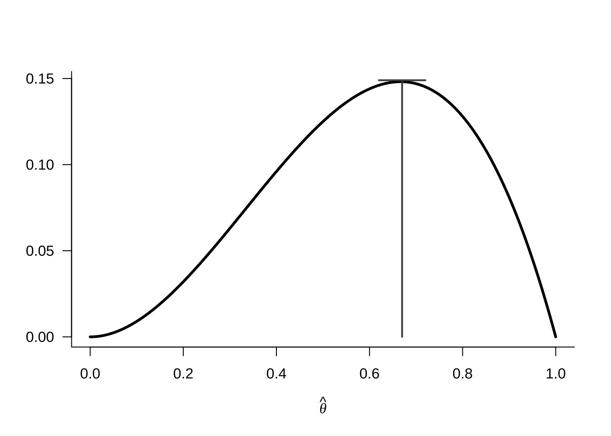
最大似然推断
最大似然推断并不是将数据视为随机的、参数视为固定的，而是将数据视为固定的，寻找什么样的参数最有可能生成这个数据，即将数据的联合分布视作某个分布密度或概率分布函数的参数的函数。
- 线性回归系数的最大似然推断
2012年189个国家的二氧化碳排放量与人均GDP（购买力平价），如果构建简单模型：(Y=_0+_1 X +)，其中Y为二氧化碳排放量的对数，X为人均GDP的对数。
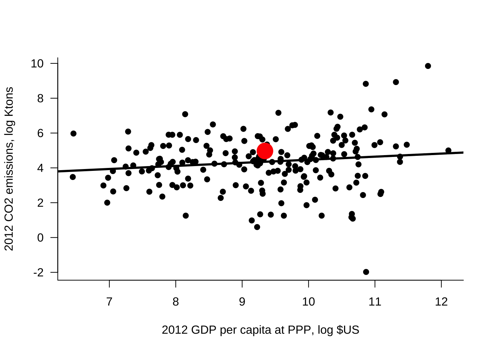
- 首先假定每个观测(Y_i)独立同分布，服从正态分布(f_{N}(y_i ;_i ,^2 ))
- 根据线性模型，等同于(i f{N}(_i ;0,^2 ))
[f_N (_i ) =exp[] =exp[] ]
- 似然函数是样本数据的联合分布概率，每个样本观测都是独立的，其联合分布概率等于每个观测边缘分布概率的乘积 [L(0 ,1 ,)|{y_1,,y_n},{x_1,,x_n}) = (22){(-n/2)}{i=1}^{n}exp[] = (22){(-n/2)}exp[_{i=1}^{n}]] 取对数进行简化： [ log L = log{(22){(-n/2)}exp[_{i=1}^{n}]} ] [ = -log(2^2)-{i=1}^{n}(y_i-_0 - 1 x_i)^2 ] [ = -log(2) - nlog- ] 剔除与被估计参数无关的项： [logL -nlog- ] 计算机优化程序更擅长计算最小值，采用(-2logL)，并且采用固定或已知的 简化： [-2logL {i=1}^{n}(y_i-_0 - _1 x_i)^2 ] 上式显示最大似然估计与最小二乘法的参数结果是一致的。但是如果我们只是得到了一个与最小二乘法一样的结果，那么最大似然估计的意义在哪里？
library(ProfileLikelihood)
wdi$lgdppc<-log(wdi$gdp.pc.ppp)
xx <- profilelike.lm(formula = log(co2.kt)~1, data=wdi, profile.theta="lgdppc",
lo.theta=0.84, hi.theta=1.15, length=500)
with(xx,
plot(theta,profile.lik,las=1,lty=1,lwd=3,
type="l",pch=19,xlab=substitute(beta[1]),
ylab="likelihood",yaxt="n",bty="l",main="Least Squares as MLE",
xlim=c(0.85,1.1))
)
abline(v=coef(out)[2],col="gray50",lwd=3)
abline(h=max(xx$profile.lik),col="gray50",lwd=4)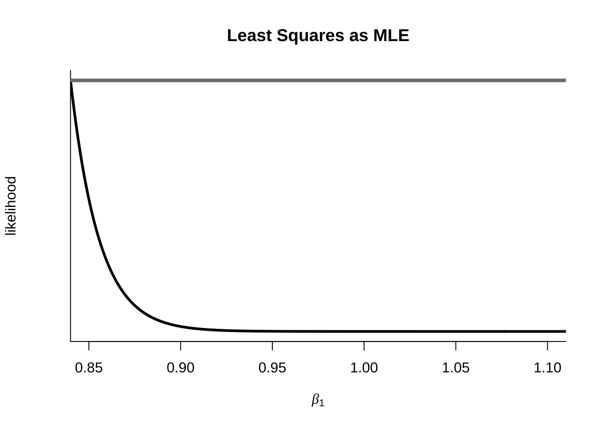
- 利用R最大化似然函数
# 建立自变量（含常数项）与因变量矩阵
x <- cbind(1,as.matrix(log(wdi$gdp.pc.ppp))) # 增加1列含1的常数项
y <- as.matrix(log(wdi$co2.kt))
K <- ncol(x); n <- nrow(x) # 观测数n和变量数K
# 定义似然函数，可以选择多种参数化方式，此处采用logL的完整形式
loglik.my <- function(par,X,Y) {
Y <- as.vector(y)
X <- as.matrix(x)
xbeta <- X%*%par[1:K]
sigma <- sqrt(sum(((X[,2]-mean(X[,2]))^2)/(n-K))) # 假定标准误已知，有多种设定形式
sum(-(1/2)*log(2*pi)-(1/2)*log(sigma^2)-(1/(2*sigma^2))*(y-xbeta)^2) # 对数似然函数，加负号变为最小化
}
# 将似然函数传递给最优化函数，提供初始值，选择算法，设定迭代次数等
mle.fit <- optim(c(5,5),loglik.my, method = "BFGS", control =
list(trace=TRUE,maxit=10000,fnscale = -1),hessian = TRUE) initial value 150490.736339
final value 375.927547
convergedif(mle.fit$convergence!=0)
print("MDW WARNING: Convergence Problems; Try again!")
# 计算标准诊断量
stderrors<- sqrt(diag(-solve(mle.fit$hessian)))
z<-mle.fit$par/stderrors
p.z <- 2* (1 - pnorm(abs(z)))
out.table <- data.frame(Est=mle.fit$par, SE=stderrors, Z=z, pval=p.z)
round(out.table, 2) Est SE Z pval
1 2.69 0.67 4.02 0.00
2 0.18 0.07 2.48 0.01异方差数据的最大似然估计
线性回归模型假定同方差，即对于所有的观测都有 (y_i N(_i , ^2 ) )，但是如果误差项是异方差的，即 (y_i N(_i , _i^2 ) )，则会导致(se())是有偏的，()的估计是无效的。
一般采用稳健性标准误来替代“有问题”的标准误，但是，异方差被看做是数据存在的一个“问题”，仅仅是因为我们假定它不应该在“正常”的数据中存在。真实的可能是我们的线性回归假定框定了我们解决问题的范围。类比一下，为什么我们不会说“异均值”是一个问题，是因为线性回归的框架中允许了因变量均值随自变量变动（这也正是我们建模的基础），那如果我们能把(_i^2 ) 也纳入到模型中，即对因变量方差建模，也就能更好的利用自变量解释解释因变量的均值和方差两方面的变化。
异方差暗含了自变量与因变量方差的关系，这可能正是我们想研究的内容。
- 实力相当的两个人才会打架，所以实力相当使得是否打架的变异程度更大
- 公立医院民营化可能不会降低平均的社会健康水平，但是会由于覆盖风险增加社会健康水平的变异程度
- 实力相当的两个人才会打架，所以实力相当使得是否打架的变异程度更大
异方差正态模型的最大似然估计
- 随机部分：
[y_i f_N (_i , _i^2 )] - 系统部分：
[_i = X_i ] [_i^2 = exp(Z_i ) ]
- 随机部分：
异方差最大似然估计的推导：
- 首先假定每个观测(Y_i)独立同分布，服从正态分布: [f_{N}(y_i ;_i ,_i^2 )]
- 样本数据的联合分布：[P(y|,2 ) = {i=1}^{n}f_{N}(y_i ;_i ,_i^2 ) ]
- 根据正态分布密度函数：[P(y|,2 ) = {i=1}^{n}(2_i^2 )^(-1/2)exp[] ]
- 对数似然函数：[logL(,^2 |y) -_{i=1}{n}logi^2 - {i=1}{n} ]
- 代入系统参数：[logL(,|y) -{i=1}^{n}z_i - {i=1}^{n}) ]
- 首先假定每个观测(Y_i)独立同分布，服从正态分布: [f_{N}(y_i ;_i ,_i^2 )]
假想样本量为2000的异方差数据来自真实模型：
[y_i N (_i , _i^2 )] [_i = 5 + 10x_i ] [_i^2 = exp(1+3x_i ) ]分别采用线性回归与异方差的最大似然估计去拟合
set.seed(1234)
obs <- 2000
x <- runif(obs)
mu <- 5+10*x
sigma2 <- exp(1+3*x)
y <- rnorm(obs, mu, sqrt(sigma2))
# 线性回归拟合
lm.fit <- lm(y~x)
summary(lm.fit)
Call:
lm(formula = y ~ x)
Residuals:
Min 1Q Median 3Q Max
-21.0880 -2.2792 0.0612 2.2686 19.9045
Coefficients:
Estimate Std. Error t value Pr(>|t|)
(Intercept) 5.0546 0.1839 27.49 <2e-16 ***
x 10.0479 0.3206 31.34 <2e-16 ***
---
Signif. codes: 0 '***' 0.001 '**' 0.01 '*' 0.05 '.' 0.1 ' ' 1
Residual standard error: 4.108 on 1998 degrees of freedom
Multiple R-squared: 0.3296, Adjusted R-squared: 0.3292
F-statistic: 982.2 on 1 and 1998 DF, p-value: < 2.2e-16# 最大似然法拟合
# 建立两个系统部分的自变量
xcovariates <- x
zcovariates <- x
# 设置参数初始值beta0,beta1,gamma0,gamma1
stval <- c(0,0,0,0)
# 设定似然函数
llk.hetnormlin <- function(param,y,x,z) {
x <- as.matrix(x)
z <- as.matrix(z)
x <- cbind(1,x)
z <- cbind(1,z)
b <- param[ 1 : ncol(x) ]
g <- param[ (ncol(x)+1) : (ncol(x) + ncol(z)) ]
xb <- x%*%b
s2 <- exp(z%*%g)
sum(0.5*(log(s2)+(y-xb)^2/s2)) # optim是最小化函数，所以公式要乘以-1
}
# 运行优化函数得到拟合结果
mle.fit <- optim(stval,llk.hetnormlin,method="BFGS",hessian=T,y=y,x=xcovariates,z=zcovariates)
# 提取估计值
pe <- mle.fit$par # 参数的点估计
vc <- solve(mle.fit$hessian) # 协方差矩阵
se <- sqrt(diag(vc)) # 标准误
z <- mle.fit$par/se # z值
p.z <- 2* (1 - pnorm(abs(z))) # p值
out.table <- data.frame(Coefs=c("beta0","beta1","gamma0","gamma1"), Est=mle.fit$par, SE=se, Z=z, pval=p.z)
print(out.table, digits=2) Coefs Est SE Z pval
1 beta0 5.05 0.102 50 0
2 beta1 10.05 0.278 36 0
3 gamma0 0.99 0.064 15 0
4 gamma1 3.01 0.112 27 0- 哪个模型更好？可以比较95%的预测区间
载入程序包：'MASS'The following object is masked from 'package:dplyr':
select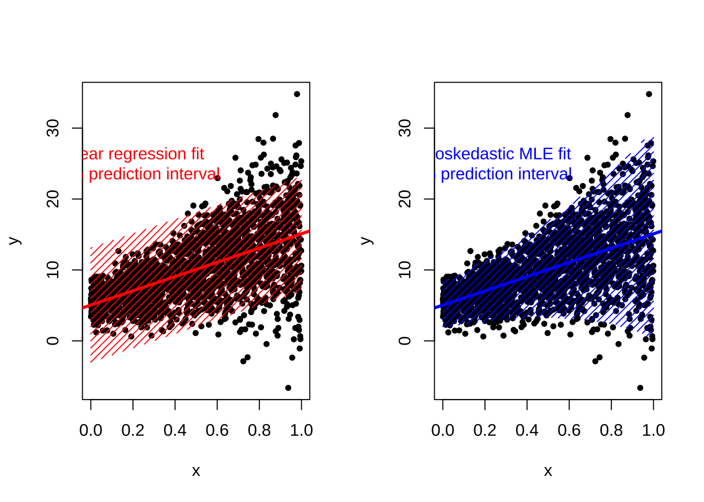